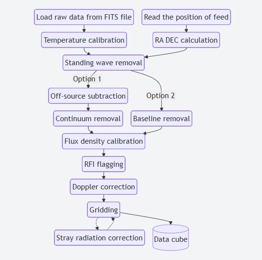
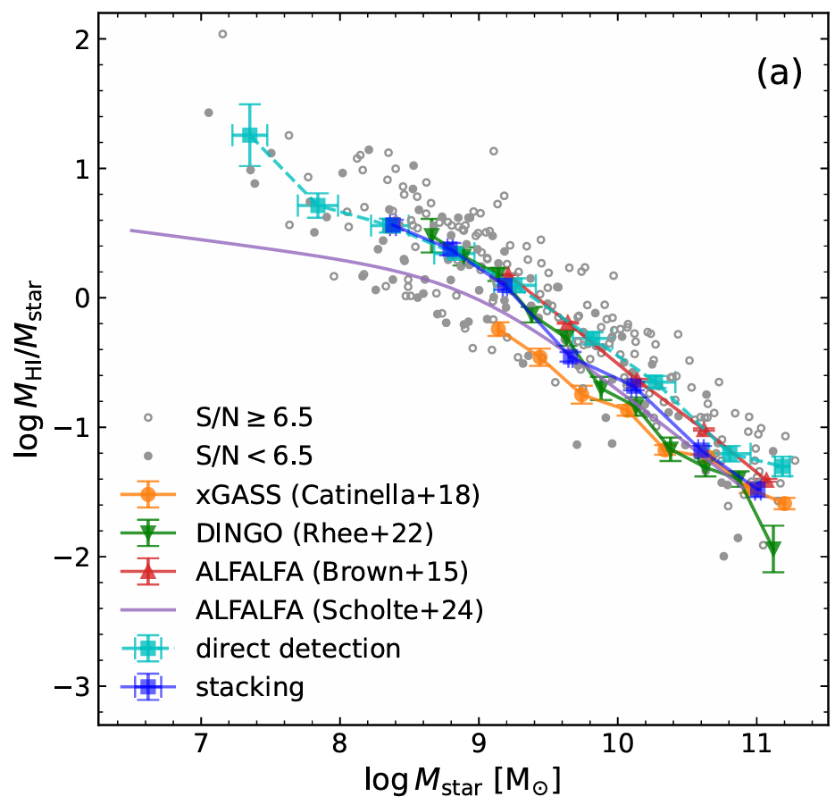
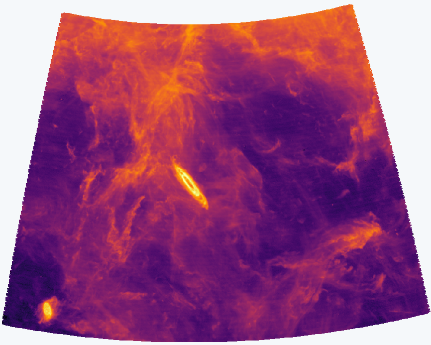
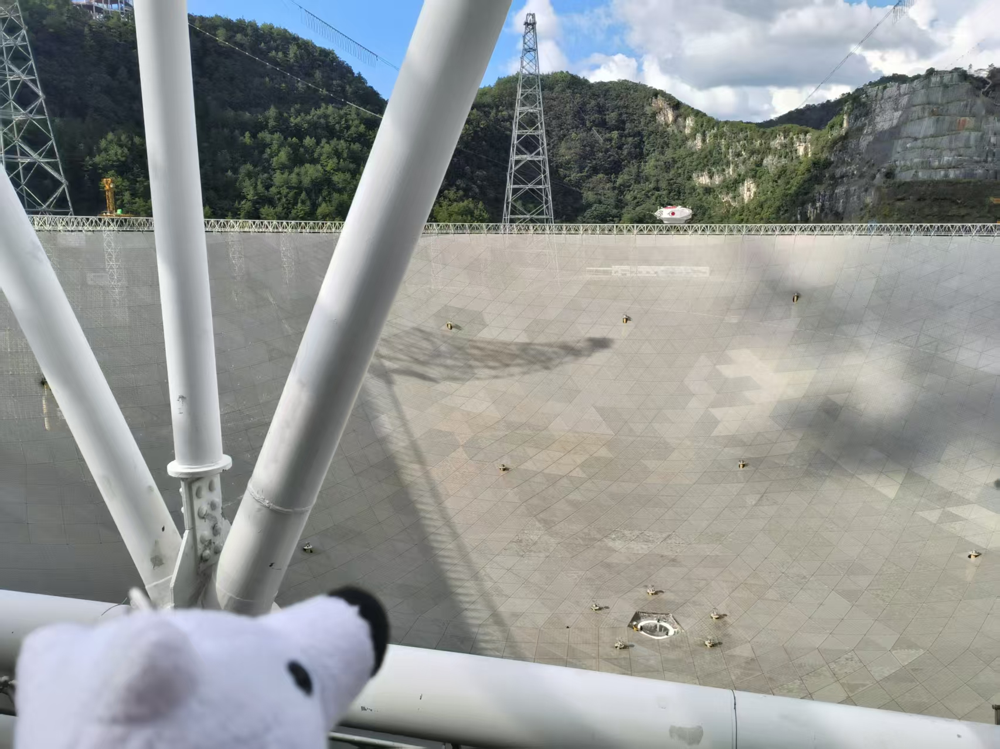
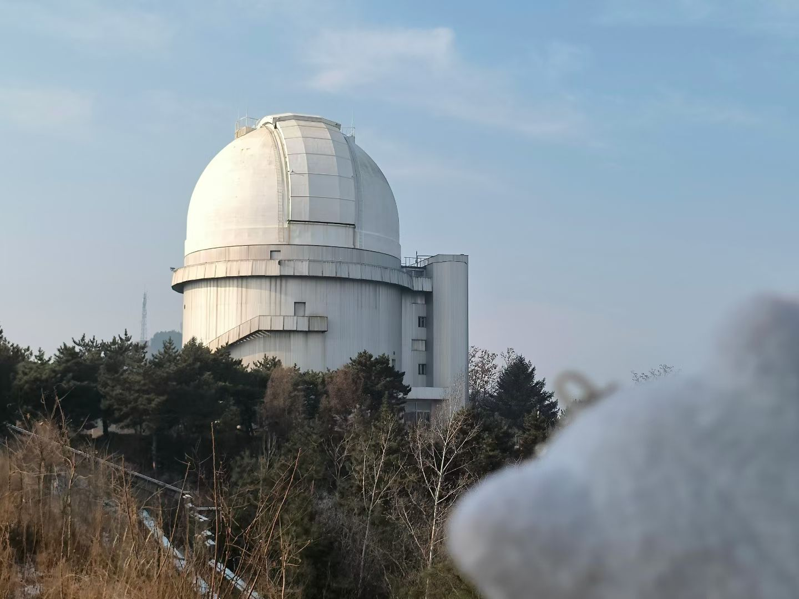
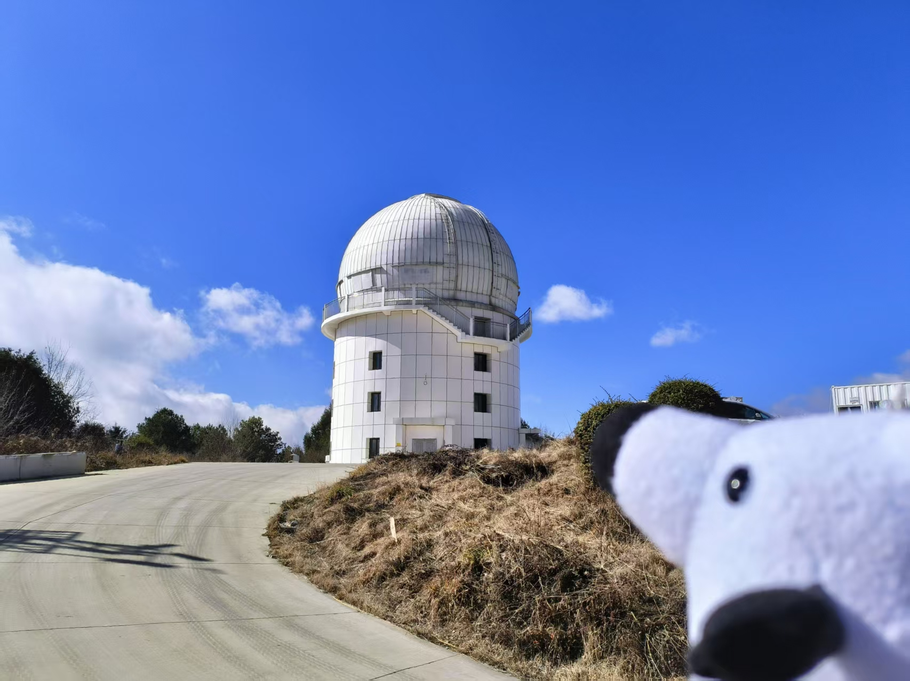

Research
FAST HI surveys, from raw data pipeline to scientific studies

HiFAST pipeline
HiFAST is the HI data calibration and imaging pipeline for FAST. I work on the pipeline's data-quality side: standing wave (ripple) removal and RFI flagging, which matter most for faint, diffuse HI.
- Yingjie Jing, Jie Wang, Chen Xu et al. HiFAST: An H i data calibration and imaging pipeline for FAST, Sci. China PMA 67, 259514 (2024) link
- Ziming Liu, Jie Wang, Yingjie Jing, Zhiyu Zhang, Chen Xu et al. HiFAST II. Flux Density Calibration, RAA (2024) link
- Chen Xu, Jie Wang, Yingjie Jing et al. HiFAST III. Standing Wave Removal, RAA 25 015011 (2025) link
- Qingze Chen, Jie Wang, Yingjie Jing, Ligang Hou, Chen Xu et al. HiFAST IV: The stray-radiation correction, Chin. Phys. B 35 059501 (2026) link

HI gas content and star formation
Neutral hydrogen (HI) is the fuel for star formation in galaxies. Using the deep HI data of the FAST-HD² Survey (Hundred-deg2 HI Deep Survey) together with DESI optical data, I study the HI content of low-redshift galaxies and how it connects to their stellar properties and star formation. The full survey is designed to map a contiguous ~100 deg2 region within the DESI DR1 footprint, with an effective integration time of 20 minutes per beam and a uniform detection sensitivity of 0.28 mJy beam-1 at 4.8 km s-1 resolution.
HD² Survey website ↗- Chen Xu, Jie Wang, Yingjie Jing et al. The FAST Hundred-deg² H I Deep (HD²) Survey: Early Results from the Pilot Survey, ApJS 285 25 (2026) link

Diffuse HI gas around M31
With the deep FAST-M31 HI observations, I study the distribution of the diffuse HI gas in the outer disk of our neighbor galaxy Andromeda (M31), where the HI column density drops to the order of 1017–18 cm-2.
M31 Survey website ↗- Chen Xu, Jie Wang, Yingjie Jing et al. Detection of the HI disk of M31 to a radius of 63 kpc, in prep
Publications
My full publication list can be found in this ADS library also ORCID website:
Observation Experience

Pingtang FAST
The Five-hundred-meter Aperture Spherical Telescope in Guizhou. I work with its HI 21 cm data for the HD² Survey and the FAST-M31 survey.

Xinglong 2.16 m telescope
Optical spectroscopy with BFOSC.

Lijiang 2.4 m telescope
Integral-field observations with the CHILI IFU.
GMRT
The Giant Metrewave Radio Telescope in India. I am a Co-I on a GMRT observing project of dark galaxy.